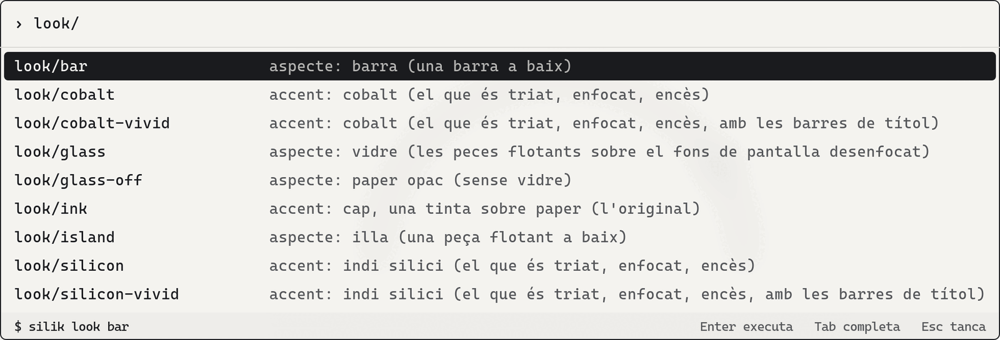
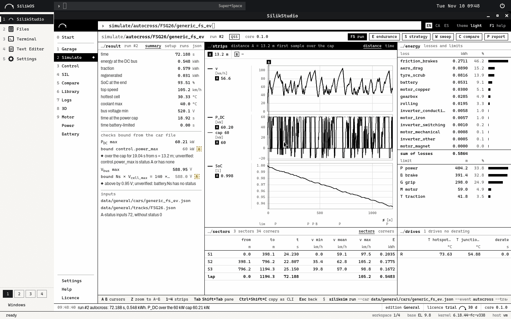
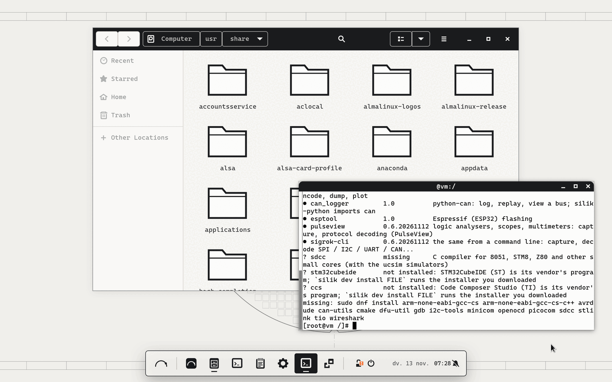
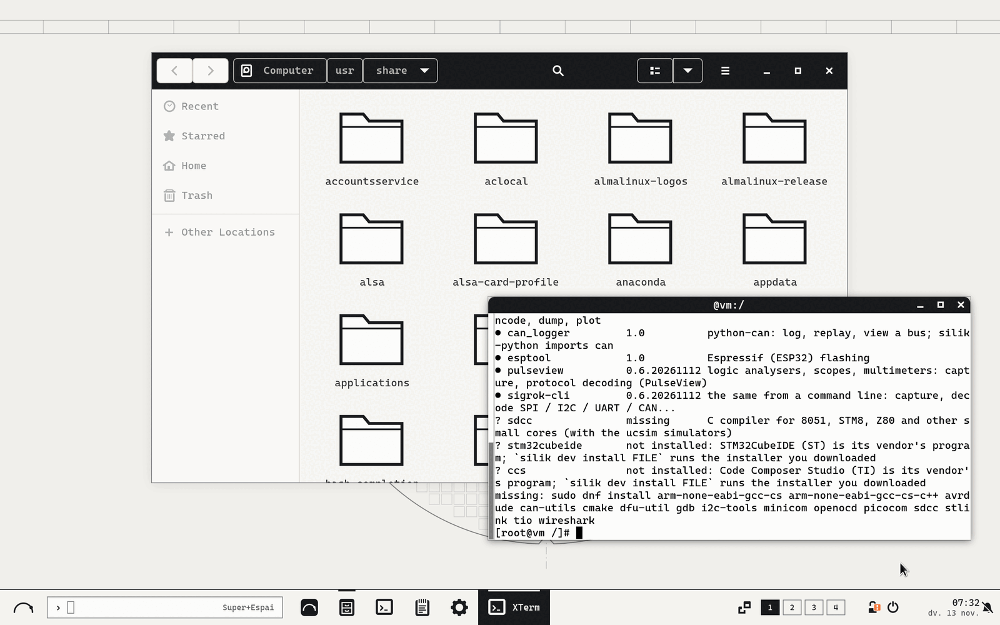
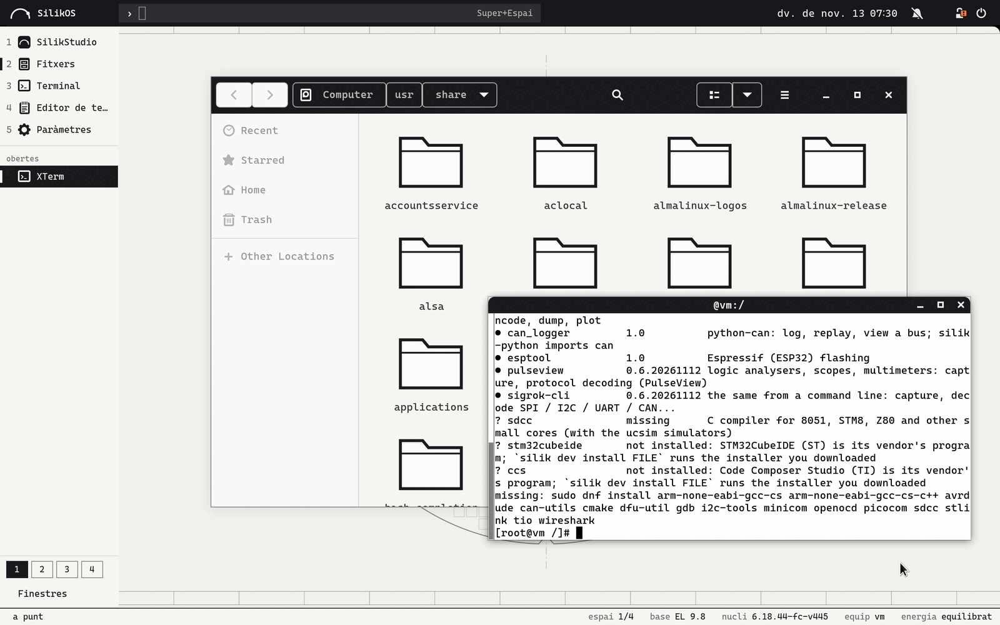
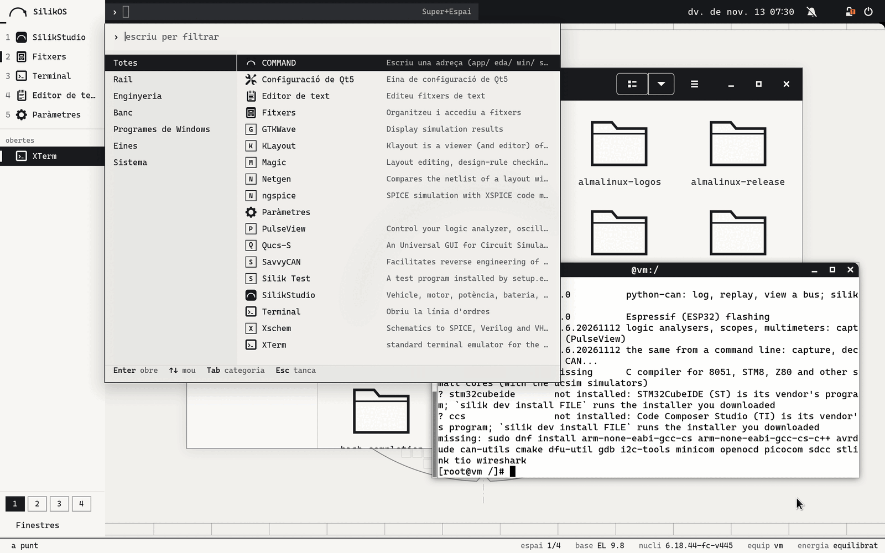

SilikOS
An engineering workstation system for electronics: chip and board design, microcontrollers, the bench and Windows programs on one desktop, with one command behind every action.
Underneath it is Enterprise Linux 9: AlmaLinux's packages and kernel, unchanged, so that a program written for Red Hat Enterprise Linux 9 finds the system it expects. SilikOS is packages on top: they install and uninstall like any other. It is a prototype: State says what has been run and what has not.

parts
| base | AlmaLinux 9.8: its packages and its kernel from its own repositories, unchanged. SilikOS carries the base's version number. |
|---|---|
| desktop | GNOME Shell 40 on X11 with the Silik shell: three looks of the same shell, one ink on paper, an accent for who wants one, Cascadia Mono, English, Catalan and Spanish. |
silik | One command behind every action of the desktop. It prints each command it runs; --dry-run prints them and runs nothing. |
| chips | The open EDA tools, built for EL 9 from their authors' sources: Xschem, ngspice, Qucs-S, Magic, KLayout, Netgen, Yosys, NVC, DEVSIM; Icarus Verilog, Verilator and GTKWave from EPEL. Boxes with an EL6, EL7 or EL8 userland for older releases of the vendors' tools. |
| embedded | The GNU ARM compiler with its C library, the base's debugger, OpenOCD, dfu-util, ST-LINK's tools, stm32flash, SDCC. A vendor's IDE (STM32CubeIDE, Code Composer Studio) is installed from your own download. |
| bench | CAN through SocketCAN, SavvyCAN, cantools and python-can, serial and RS-485 terminals, sigrok and PulseView for logic analysers. |
| Windows | A double-click on an .exe runs it with Wine (our build of Wine 11.0 for EL 9) in a sandbox that does not see the rest of the home folder. The Windows virtual machine for what Wine cannot run is written; it has not been run. |
| security | SELinux enforcing (the base's), a firewall zone that drops incoming connections, sshd off, updates installed daily; the system never restarts by itself. silik secure status audits it. |
| SilikStudio | The SilikVolt engineering suite as a native application: a window of its own, the first key of the rail. |

made for
- electronics and chip-design engineers who need an EL 9 workstation for the EDA tools and a desktop for everything else;
- university labs: the open flow (schematic, simulation, layout, LVS, synthesis) installed, and tried by one command;
- Formula Student and other embedded teams: compiler, debugger, flashing, CAN and serial on one system, beside SilikStudio.
Looks
One shell, three looks: silik look island, silik look bar, silik look silik. One ink on paper by default; silik look --accent gives one colour (steel, cobalt, silicon indigo, volt violet or spark yellow) to what is selected, focused or running. The floating pieces are glass over the blurred wallpaper; silik look --glass off makes them solid paper.




The pictures: the desktop test rig, 13/11/2026: GNOME Shell 40 in an AlmaLinux 9.8 container, drawn without a graphics card; the session is in Catalan. It runs as root, with a stand-in terminal. Pictures of the system as the CI installs it in a virtual machine are on the branch ci-results.
3CommandsCommands
Every action of the desktop goes through silik, and silik prints the commands it runs. The COMMAND bar shows the same line before Enter.
silik status | what this system is: base, kernel, SilikOS packages, the desktop |
|---|---|
silik doctor | is this workstation healthy: system, security, graphics, bench, EDA, Windows, network. Each line says ok, warn, bad or unknown, and the command that fixes it. Unknown, never ok, for what it cannot see. It changes nothing |
silik update | updates every package, then says whether to restart; --auto all, security or off sets the daily automatic updates |
silik look | the look: island, bar or silik; --accent, --glass on or off |
silik eda tools | the open EDA tools on this system; silik eda try makes them do real jobs together; silik eda bench and tune measure and set the simulator's threads |
silik eda create | a box with an EL6, EL7 or EL8 userland for an older release of a vendor's tool; enter, run, list |
silik dev tools | the embedded tools on this system; silik dev try builds, debugs and talks to a probe |
silik dev can | the CAN interfaces; up can0 500k brings one up; silik dev serial lists the serial ports and what they are |
silik dev install FILE | runs the installer of STM32CubeIDE or Code Composer Studio that you downloaded |
silik win open FILE.exe | what a double-click runs: the program in its sandbox; silik win apps lists the installed Windows programs |
silik power | the power profile: performance, balanced, saver or auto, through the base's tuned; zram, trim |
silik secure status | a read-only audit of the system's security; silik secure apply sets the SilikOS defaults and prints what it runs |
what they print
Run on 13/11/2026 in an AlmaLinux 9.8 container with four SilikOS packages (silik-tools, silik-dev, silik-eda-open, silik-win) and our ngspice installed, as an ordinary user. There is no desktop and no hardware there, and most tools are absent: the output says so. The lines that begin with $ are silik's: the commands it runs.
› silik eda try sim
$ cp -r /usr/share/silikos/eda/try/. /home/eng/.cache/silikos/eda-try-8mf25udb
$ cd /home/eng/.cache/silikos/eda-try-8mf25udb
$ ngspice -b inverter.cir > inverter.out
● sim an inverter's output is high for a low input and low for a high one
1 ok, 0 failed, 0 not run; the files: /home/eng/.cache/silikos/eda-try-8mf25udb
› silik --dry-run look bar --accent cobalt
$ gsettings set com.silikvolt.silikos.shell look bar
$ gsettings set com.silikvolt.silikos.shell accent cobalt
$ gsettings set org.gnome.desktop.interface gtk-theme SilikOS-cobalt
$ gsettings set org.gnome.shell.extensions.user-theme name SilikOS-cobalt
$ gsettings set org.gnome.desktop.interface icon-theme SilikOS-Colour
› silik --dry-run dev can up can0 500k
$ sudo ip link set can0 down
$ sudo ip link set can0 type can bitrate 500000 restart-ms 100
$ sudo ip link set can0 up
can0 up at 500000 bit/s: `candump can0` shows its frames, `cansend can0 123#DEADBEEF` sends one
› silik doctor eda windows
eda
◆ warn EDA boxes podman is not installed: no EL6 / EL7 / EL8 boxes
fix: sudo dnf -y install podman
◆ warn open tools 1 of 13; missing: devsim gtkwave iverilog kicad klayout magic netgen nvc qucs-s verilator xschem yosys
fix: sudo dnf -y install devsim gtkwave iverilog kicad klayout magic netgen nvc qucs-s verilator xschem yosys
◆ warn ngspice threads 2, its default, on 4 cores: transistor models evaluated on 2
fix: silik eda tune # silik eda bench measures first
windows
◆ warn Wine not installed: Windows programs do not run
fix: sudo dnf -y install silik-wine silik-wine-mono silik-wine-gecko
● ok Wine prefixes none yet (an installer opened with silik win open SETUP.exe makes "default")
● ok sandbox bubblewrap, user namespaces on
? unknown Windows VM no /dev/kvm (inside a container)
2 ok, 4 warn, 0 bad, 1 unknown (0.01 s)
4State
State
A prototype verified in virtual machines and containers, not a product. The repository keeps two tables, verified and not verified, with how each row was run: docs/STATUS.md. Nothing enters the first without having been run.
verified
| what | how |
|---|---|
| installation | The ISO installs unattended in a virtual machine, the installed system boots and checks itself. GitHub Actions, workflow CI; the last complete run when this page was written: 13/11/2026, commit 4c4163f, 120 checks ok, none failed; it started in 9.3 s with about 985 MB in use. Beside the stock AlmaLinux 9 Workstation in one virtual machine (workflow Compare) it used 151 to 166 MB less memory and reached the desktop 0.65 to 0.85 s later (its session is X11, the base's Wayland): not faster to start. |
| desktop | The three looks, Start, the COMMAND bar, the login and lock screens: on that installed system, on its screen. |
| chips | silik eda try on that installed system: 13 jobs ok (an inverter from schematic to layout and back, a counter down to gates, a diode in the device simulator). |
| Windows | Programs written for the tests (64 and 32 bit, an installer, an .msi, a .NET program) run with our Wine in the sandbox, with SELinux enforcing, on that installed system. |
| embedded | silik dev try: 7 jobs ok (build, C library, C++, debug, probe, DFU, ST-LINK) in a clean EL 9 and on the installed system. No board was connected. |
| ARM | The SilikOS packages build on AlmaLinux 9 for aarch64, and so do most of its tools, which pass their trials there: on GitHub's ARM runners (a few under emulation only). |
not verified
- any real hardware: graphics drivers (NVIDIA), Wi-Fi, suspend, a CAN adapter on a bus, flashing or debugging a board, a logic analyser;
- any vendor tool: Cadence, Synopsys, Altium, STM32CubeIDE, Code Composer Studio;
- the Windows virtual machine;
- SilikOS installed on an ARM machine;
- what each power profile does on a laptop: power drawn, battery hours;
- what
silik --helpmarks as experimental (a project's pinned tools, the bench test runner, the mirror for a network without Internet, the vendors' requirement lists): run in containers or with stand-ins only.
There is no signed package repository yet, so an installed system does not receive new versions of SilikOS's own packages; the base's updates arrive from the base. The list above is the short one: docs/STATUS.md has every row.
5Get itGet it
Today there is no release to download and no package repository published. The installer of the CI's last green run is its artifact silikos-iso (GitHub Actions, with a GitHub account, for a limited time); or build it from the repository. Try it in a virtual machine first, since nothing has been run on real hardware.
git clone https://github.com/BTomeu/SilikOs && cd SilikOs bash tools/build_rpms.sh # rpmbuild, createrepo_c python3 -m unittest discover -s tests # Python 3.9 or later bash tools/build_iso.sh # xorriso, mtools, cpio, curl, gpg, isomd5sum; repo.almalinux.org
tools/build_rpms.sh builds the packages and their repository metadata; tools/build_iso.sh, the network installer ISO. The installer downloads the base system from AlmaLinux's and EPEL's repositories, so the machine needs a network. It never selects or erases a disk: you choose it. The steps, and how to put SilikOS on an installed AlmaLinux 9: docs/BUILD.md.
repository
| BTomeu/SilikOs | the source: packages, kickstart, installer, tests |
|---|---|
| docs/STATUS.md | what has been run, and what has not |
| docs/BUILD.md | building the packages and the ISO, installing |
| docs/SECURITY.md | what the system sets, and why |
| SECURITY.md | reporting a vulnerability privately |
licence, brand
- The licence of SilikOS's own code is not chosen yet: until it is, all rights are reserved. The base and the tools keep their own licences. Cascadia Mono, the typeface of this page, is under the SIL Open Font License.
- The names SilikOS, SilikStudio and SilikVolt and the SilikVolt mark are not licensed for reuse.
- No vendor software is in the repository or in the system: EDA tools, Windows and Windows programs are the user's own licences. SilikOS is not affiliated with or endorsed by the AlmaLinux OS Foundation, Red Hat, or the vendors and projects whose tools it names.
- This page sets no cookie, counts nothing and asks nothing of another host.